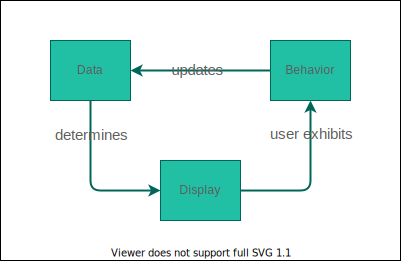

POST Requests
Lecture Goals
- Observe how to send a POST request using HTML forms and JavaScript
- Explain the difference between optimistic and pessimistic rendering



Fetch Configuration
fetch(url, {
method: 'POST', // *GET, POST, PUT, DELETE, etc.
mode: 'cors', // no-cors, *cors, same-origin
cache: 'no-cache', // *default, no-cache, reload, force-cache, only-if-cached
credentials: 'same-origin', // include, *same-origin, omit
headers: {
'Content-Type': 'application/json'
// 'Content-Type': 'application/x-www-form-urlencoded',
},
redirect: 'follow', // manual, *follow, error
referrerPolicy: 'no-referrer', // no-referrer, *no-referrer-when-downgrade, origin, origin-when-cross-origin, same-origin, strict-origin, strict-origin-when-cross-origin, unsafe-url
body: JSON.stringify(data) // body data type must match "Content-Type" header
});
Working with JSON
- Fetch to URL returns Promise for a response
- response.json() returns a Promise for the parsed body
- Fetch returns a resolved response even when we get an error from the API server.
This happens consistently as we send fetch requests, so we’ll end up typing a lot of boilerplate each time–especially when we want to add a catch to our fetch call.
Putting boilerplate into functions
function getJSON(url) {
return fetch(url)
.then(response => {
if (response.ok) {
return response.json()
} else {
throw (response.statusText)
}
})
}
function postJSON(url, data) {
return fetch(url, {
method: "POST",
headers: {
"Content-Type": "application/json"
},
body: JSON.stringify(data)
})
.then(response => {
if (response.ok) {
return response.json()
} else {
throw (response.statusText)
}
})
}